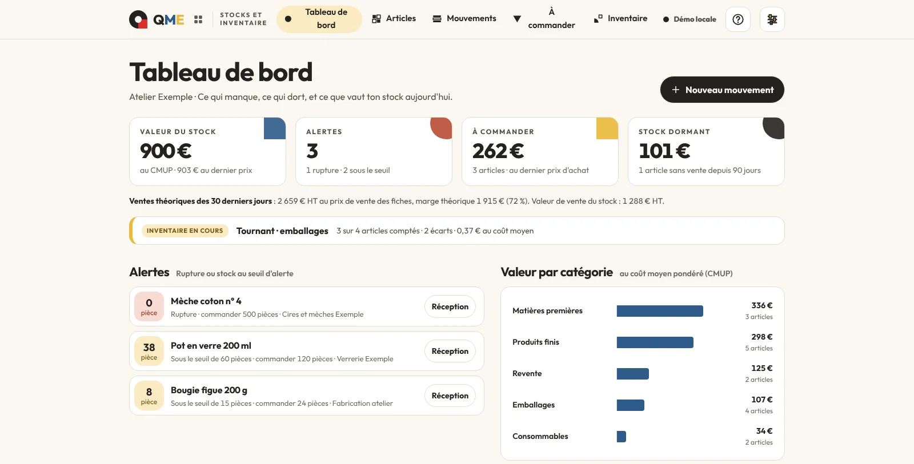
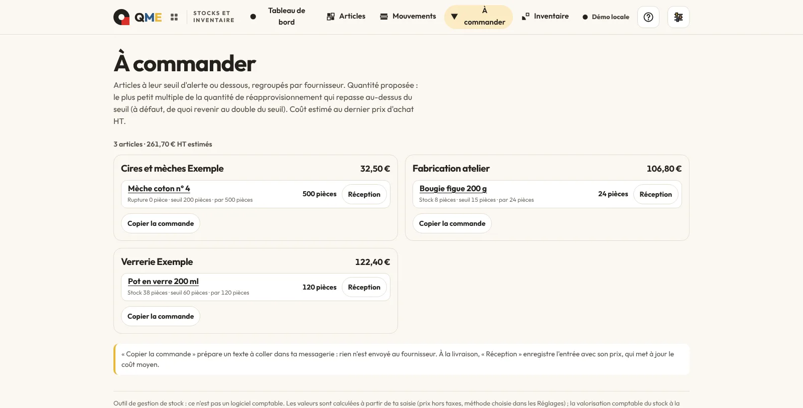
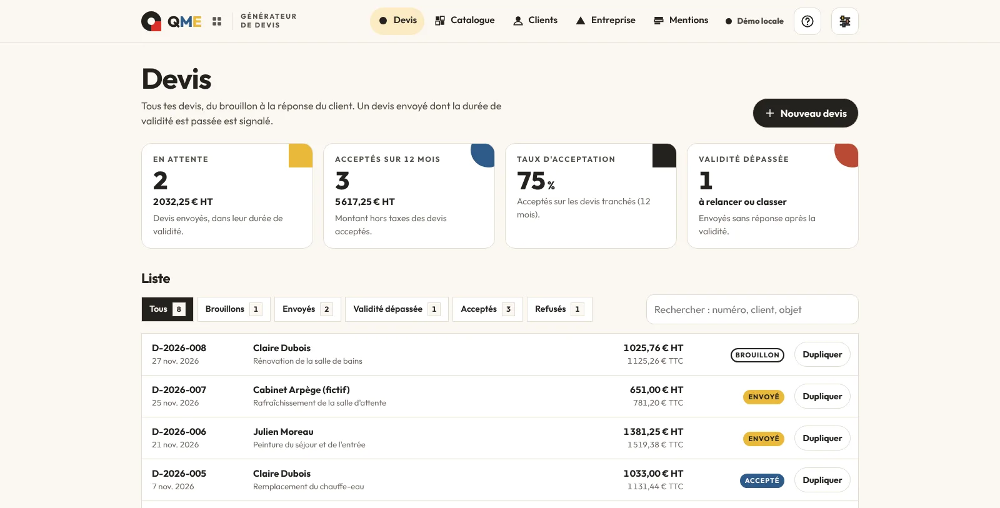
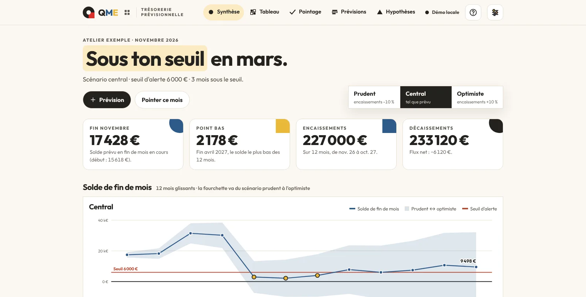
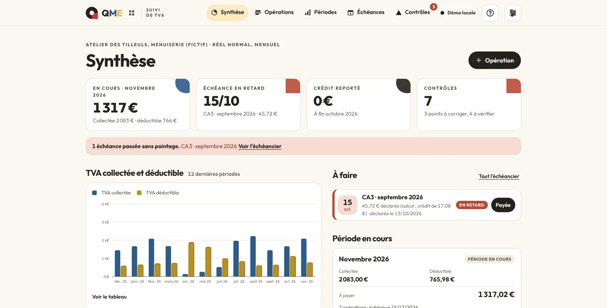
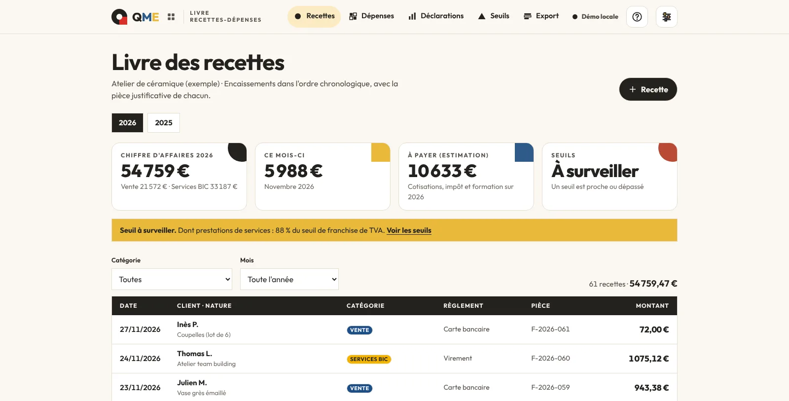

Concept pour les artisans qui fabriquent et vendent · fleuristes, micro-brasseries, ateliers-boutiques
Le stock, les devis et la caisse, enfin d'accord.
Cinq outils en ligne déjà prêts pour l'artisan qui fabrique et vend lui-même : le stock des matières et des produits finis avec ses seuils d'alerte, les devis des mariages, des événements et des commandes de professionnels, la trésorerie des douze prochains mois et la TVA. Ils s'utilisent tels quels dès le premier jour, chacun s'achète aussi seul, et je peux les adapter sur mesure à votre atelier.
Chaque démo ouvre une activité fictive, sans inscription : un atelier de bougies pour le stock et la trésorerie, un atelier de céramique pour le livre des recettes, une menuiserie pour la TVA et un artisan du bâtiment pour les devis (vos prestations et vos produits s'y saisissent de la même façon). Elle reste dans votre navigateur et n'envoie rien. Toutes les données affichées sur cette page sont fictives.
Fleuristes
Des fleurs qui ne se gardent que quelques jours, des devis de mariage et de deuil à faire vite et juste, des commandes d'entreprises à suivre : il faut savoir ce qui reste, ce qui part et ce qui est déjà promis.
Micro-brasseries
Malt, houblon, levures, bouteilles et fûts : les matières premières et le conditionnement se suivent au seuil d'alerte, et la TVA des ventes aux bars, aux cavistes et en boutique se déclare à date.
Ateliers-boutiques
Céramistes, savonniers, ébénistes, maroquiniers : l'argile, les huiles, le bois ou le cuir d'un côté, les pièces finies en boutique de l'autre, et des commandes sur mesure à chiffrer avant de les lancer.
01 · Stocks
Matières et produits finis, au bon niveau
Le stock de chaque article est calculé par ses entrées, ses ventes et sa fabrication. Le tableau de bord dit ce qui manque, ce qui dort et ce que vaut le stock.
- Un seuil d'alerte par article : rupture et stock bas en tête
- Valeur du stock au coût moyen, par catégorie
- Stock dormant repéré, inventaire avec écarts corrigés d'un clic

02 · À commander
La commande prête, fournisseur par fournisseur
Tout article au seuil ou dessous rejoint la liste à commander, avec la quantité proposée et le coût estimé au dernier prix.
- Regroupement par fournisseur
- « Copier la commande » : un texte à coller dans votre messagerie
- « Réception » enregistre l'entrée et met le coût moyen à jour

03 · Devis
Un devis juste au centime, en quelques minutes
Mariage, cérémonie, événement, commande d'un restaurant ou d'une boutique revendeuse : vos prestations et vos produits viennent du catalogue, les totaux se calculent seuls.
- TVA par taux, remise, acompte et mentions obligatoires
- Aperçu A4 à imprimer ou enregistrer en PDF
- Chaque devis suivi : en attente, accepté, refusé, validité dépassée

04 · Trésorerie
Le creux vu avant qu'il n'arrive
Les encaissements et les décaissements prévus sur douze mois, puis le solde de fin de mois comparé à votre seuil d'alerte : utile avant une grosse commande de matières ou une saison chargée.
- Trois scénarios : prudent, central, optimiste
- Pointage du réalisé, mois par mois
- Plan de trésorerie exportable pour la banque

05 · TVA
La TVA de chaque période, sans échéance ratée
Pour les entreprises qui facturent la TVA (régime réel de TVA) : chaque vente et chaque achat saisis au centime, la TVA collectée et déductible de la période, l'échéancier des déclarations et les points à contrôler.
- Collectée, déductible, crédit reporté
- Échéances signalées avant la date
- Contrôles avant de déclarer, export pour l'expert-comptable

06 · Livre des recettes
Pour les micro-entrepreneurs seulement
Le livre des recettes et des dépenses de la micro-entreprise, avec les cotisations estimées et les seuils surveillés. Si votre atelier est en société ou hors du régime micro, il ne vous sert pas : prenez les autres outils seuls.
- Recettes datées avec leur pièce justificative
- Cotisations, impôt et formation estimés
- Seuils de chiffre d'affaires et de franchise de TVA surveillés

Prêt à l'emploi, ou sur mesure
Les outils sont prêts : ils s'ouvrent en ligne, sur ordinateur, tablette ou téléphone, et vos données sont synchronisées. Ils ne se connectent à aucune caisse ni à aucune banque : vous saisissez, ils calculent. Si votre atelier demande autre chose, je le construis pour vous.
Le pack Commerçant et artisan
95 € au lieu de 127 €, achat unique, sans abonnement ni renouvellement
- Stocks et inventaire25 €
- Générateur de devis29 €
- Trésorerie prévisionnelle29 €
- Suivi de TVA (entreprises qui facturent la TVA)19 €
- Livre recettes-dépenses (micro-entreprise)25 €
Chaque outil s'achète aussi seul, et chacun s'essaie 14 jours gratuitement avec vos propres données, sans carte bancaire.
La version sur mesure
Adaptée à votre atelier
- Vos recettes de fabrication : matières consommées à chaque brassin, fournée ou bouquet
- Vos fûts et leurs retours, vos dates limites, vos lots
- Vos devis types (mariage, deuil, événement) et vos tarifs professionnels
Ce sont des outils de gestion, pas un logiciel comptable ni un logiciel de caisse. Les taux et les échéances de TVA et de cotisations sont datés et sourcés dans chaque outil ; ils ne remplacent pas le conseil de votre expert-comptable. Le générateur fait des devis, pas des factures. Les données de la démo sont fictives et ne quittent pas votre navigateur.
Trente minutes pour voir ce qui vous ferait gagner le plus de temps
Ouvrez la démo, puis dites-moi comment vous suivez aujourd'hui votre stock, vos devis et votre trésorerie : je vous dis franchement si les outils prêts à l'emploi suffisent, lesquels vous servent vraiment, ou ce qu'une version sur mesure changerait.